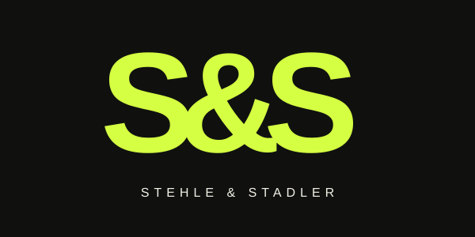

S&S ist die kompakte Hauptmarke. Stehle & Stadler steht als ausgeschriebener Name darunter. Der Auftritt verbindet reduzierte Gestaltung mit der Energie einer Clubnacht. Die Sprache ist direkt, selbstbewusst und einladend.

Eine kräftige typografische Wortmarke mit eng gesetzten Zeichen. Das & steht für das Duo. Rundum mindestens die Breite des & als Freiraum lassen. Für kleine Anwendungen nur S&S verwenden.
S&S Logo als SVG herunterladen ↗Arial / Helvetica in kräftigen Schnitten für kurze, große Headlines. Normale Schnitte für gut lesbare Texte. Monospace als Akzent für Termine, Genres und Nummerierung. Keine externen Schrift-Dienste nötig.
Echte Live-Momente, Nähe zum Publikum und kontrastreiche Live-Fotos. Lime gezielt für Akzente einsetzen. Die abstrakten Kreise und die drei Sound-Cover ergänzen die Live-Fotografie.
Booking-Adresse, vollständige Anbieter- und Datenschutzangaben sowie Bildnachweis ergänzen. Hörproben, Profile und bestätigte Termine lassen sich über config.js hinzufügen.